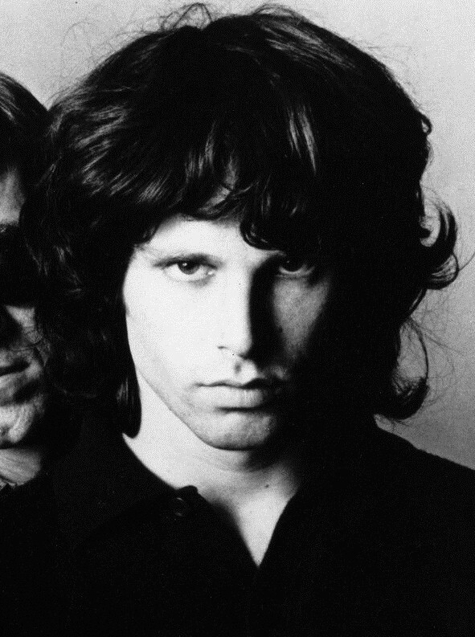

The Crystal Ship is the tender B-side Jim Morrison wrote after his first serious relationship ended.
Recorded in one evening session in September 1966, it became one of the quietest, most personal tracks on The Doors' debut album.

Table of Contents
Recording a Bassless Ballad
The Doors taped the song on September 22, 1966, during an evening session at Sunset Sound Recorders.
Producer Paul Rothchild ran the same session that produced the band's cover of "Back Door Man."
Ray Manzarek's piano carries almost the entire arrangement.
The Doors never carried a bass player, so Manzarek's left hand covered the low end as his right hand played the melody.
Robby Krieger's guitar stays soft, and John Densmore's drums barely rise above a whisper.
Why the Mix Sounds So Thin
Critics have called the recording hollow next to the band's blues heavy songs like "Break On Through."
That thinness fits the material rather than working against it.
Manzarek wanted the piano to carry a fragile, floating feel.
Morrison's vocal matches it, staying hushed instead of building to a shout.
The Breakup Behind the Lyrics
Jim Morrison wrote the words after his relationship with Mary Werbelow ended.
She had been his girlfriend through much of his college years in Florida and California.
Drummer John Densmore later said the song was simply Morrison's way of saying goodbye to her.
Formal writing credit still goes to all four band members, matching how The Doors split credit across the debut album.
Werbelow's breakup with Morrison also shaped the earliest version of the album's closing track, "The End."
Why Listeners Keep Arguing Over Its Meaning
The lyrics never say plainly who or what the singer is losing.
That gap has kept fans and critics guessing for decades.
- Critic Greil Marcus read the song's dreamlike ending as sleep, an overdose, or a murder-suicide.
- Some fans argue the title points to crystal methamphetamine, a theory Densmore flatly denied.
- Local Santa Barbara lore claims Morrison wrote it after watching the offshore Platform Holly oil rig glow at night.
The title itself may borrow from literature rather than drugs.
Some scholars trace it to William Blake's poem "The Crystal Cabinet."
Others point to Lebor na hUidre, a medieval Irish manuscript also known as the Book of the Dun Cow.
Release, Chart Life and Legacy
Elektra Records placed the song on The Doors, the band's debut album, released January 4, 1967.
The record climbed to number 2 on the Billboard 200.
Three months later, Elektra pressed it as the B-side to "Light My Fire," the single that carried the band to number one that summer.
The Doors performed both songs back to back on American Bandstand on July 22, 1967.
Artists Who Kept Coming Back to It
Duran Duran recorded a cover for their 1995 album Thank You.
Cigarettes After Sex released their own version in October 2025, introducing it to a newer audience.
The Guardian ranked it the second best song The Doors ever recorded in a 2015 list, while Louder Sound placed it 14th.
| Detail | Fact |
|---|---|
| Written by | Jim Morrison, Ray Manzarek, Robby Krieger, John Densmore |
| Recorded | September 22, 1966, Sunset Sound Recorders |
| Producer | Paul Rothchild |
| Album | The Doors, released January 4, 1967 (Elektra) |
| Single release | B-side of "Light My Fire," April 1967 |
| Length | 2:30 |
| TV debut | American Bandstand, July 22, 1967 |
FAQ
What is The Crystal Ship about?
Jim Morrison wrote it as a farewell to Mary Werbelow, his girlfriend through much of college.
The lyrics stay vague enough that fans still argue over their exact meaning.
When did The Doors record this song?
The Doors recorded it on September 22, 1966, during an evening session at Sunset Sound Recorders in Hollywood.
The same session produced their cover of "Back Door Man."
Does the song reference drugs?
Some listeners hear a drug reference in the title.
John Densmore denied that theory and said Morrison wrote it as a breakup song, not a song about crystal methamphetamine.
Was it released as a single?
It came out in April 1967 as the B-side to "Light My Fire."
That single carried The Doors to number one that summer.
Who wrote the lyrics?
Jim Morrison wrote the lyrics.
The song carries a formal writing credit shared by all four Doors: Morrison, Ray Manzarek, Robby Krieger and John Densmore.
The Crystal Ship shows a gentler side of The Doors than the blues stomp of "Back Door Man" or the sprawling The End.
Its April 1967 pairing with Light My Fire introduced millions of radio listeners to Morrison's quieter side.
Wikipedia's entry on the song traces its literary influences in more detail.
Explore more of The Doors' catalog, or the wider psychedelic rock scene that shaped The Crystal Ship.
Back to the 1960smusic.net homepage to explore every genre of the decade.